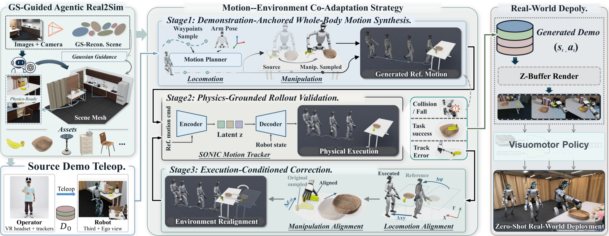
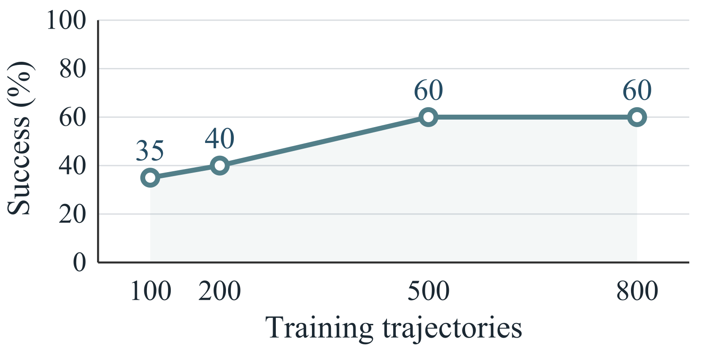

目录 · 10 节
1它到底在解决什么问题？2整体流程3第一步：把房间搬进仿真4第二步：从 15 条示范改出几千条5为什么还要按执行结果修正？6实验结果7差距到底在哪：动作还是画面？8我认为它的局限9一个机器人团队可以怎么试10一句话结论人形机器人要学会走到桌前、拿起香蕉再放进篮子这类长任务，通常要靠人遥操作采上百条真机示范，桌子挪个位置往往就得重采。Zero-HLM 改为全部在仿真里造数据。它用手机拍一圈真实房间，重建成既像照片、又能做物理交互的仿真场景，再把每个任务 15 条在仿真里遥操作的示范自动改写成上千条新示范。每条新示范随机换一个机器人起点和物体、放置目标的位置，手的轨迹跟着目标一起移动，只留下在仿真里跑成功的。用这些数据微调英伟达的机器人基础模型 GR00T N1.7，不加任何真机数据，直接部署到宇树 G1 人形机器人上，三个任务平均成功率 66.7%，高于用 100 条真机示范训练的 46.7%。换到真机示范没覆盖的位置后，成功率从 23% 提到 69%。
做机器人学习、关心数据成本的团队值得读这篇。它在人形机器人全身移动操作上做了一个干净的对照：模型、控制器、评测次数都一样，只换训练数据的来源。我认为比重建流程更有价值的是两组诊断实验：仿真生成的动作标签基本可以直接用，剩下的差距主要在画面；底层控制器执行走偏时，把场景跟着机器人挪一挪，比改动作更管用。需要留意的是，所有实验都在同一个重建场景里做，每个扩展位置只测 5 次，绝对成功率也还不高。
它到底在解决什么问题？
先看一个具体场景（示意）。团队在客厅里戴上头显遥操作采了 100 条“拿香蕉放篮子”的真机示范，起点、香蕉和篮子都摆在固定的参考位置。训练好的策略换个条件测：
| 测试条件（示意） | 真机示范里见过吗 | 策略大概会怎样 |
|---|---|---|
| 起点、香蕉、篮子都在参考位置 | 见过 | 能做 |
| 机器人从 1 米外另一个角度出发 | 没见过 | 经常走不到合适的抓取位置 |
| 香蕉换到桌子另一头 | 没见过 | 手伸到老位置去抓 |
| 香蕉换成苦瓜，篮子换成白盘子 | 没见过 | 大多失败 |
论文里的真实数字印证了这一点：只用 100 条真机示范训练的策略，换起点后任务 A 的成功率只有 22.9%，换成苦瓜放白盘子只有 20%。要覆盖这些变化，就得在每个新位置上重新遥操作，人形机器人上一条示范要半分钟以上，还要有人盯着。
仿真本来是解决数据量的办法，但用在人形机器人上有两道坎。第一，机器人会走动，头上的相机从不同位置、不同高度看场景，所以整间屋子都要重建得像真的，桌面级的重建不够；同时这间屋子还要能做物理交互，抽屉要能开，东西要能放稳。第二，人形机器人靠全身跟踪控制器执行动作，控制器要同时顾及平衡和接触，给它一段参考动作，它不会一帧不差地照做，脚下偏几厘米，手就够不到物品了。
论文用的控制器是 SONIC（一个现成的人形全身动作跟踪控制器）。输入一小段参考动作，它先编码成一个 64 维向量，再解码成各关节的目标角度。训练出来的策略也输出这个 64 维向量，外加两只手的开合指令，一共 66 维，部署时交给冻结的 SONIC 解码器执行。
整体流程

| 环节 | 输入 | 做什么 | 产出 |
|---|---|---|---|
| 重建场景 | 手机拍的房间照片和物品视频 | 高斯重建负责画面，网格场景负责碰撞和关节，两者放在同一坐标系里 | 能渲染也能做物理仿真的数字孪生 |
| 改写示范 | 每个任务 15 条仿真遥操作示范 | 随机挪动起点、物品和目标位置，重新规划行走，把手的动作搬到新位置 | 一条条新的全身参考动作 |
| 执行验证 | 参考动作 | 交给 SONIC 在仿真里执行，检查是否完成任务、有没有摔倒或碰撞 | 成功的轨迹，以及失败轨迹的偏差 |
| 按偏差修正 | 失败轨迹 | 按机器人实际走到的位置挪动场景和物品，修正抓取高度，再执行一次 | 更多成功轨迹 |
| 渲染和训练 | 成功轨迹 | 回放实际执行的状态，渲染第一人称画面，微调 GR00T N1.7 | 直接上真机的策略 |
关键分工是：画面交给高斯重建，物理交给网格，两者对齐之后，生成的数据才既好看又真实可执行。下面拆开讲。
第一步：把房间搬进仿真
高斯泼溅（Gaussian Splatting）用大量带颜色的小椭球表示场景，渲染出来接近照片，但从它导出的网格表面坑洼不平，直接拿来做碰撞，物品会卡住或穿模。Zero-HLM 让一个多模态 agent 在 Blender 里搭一个干净的网格场景：先按高斯重建导出的粗网格摆好家具，再在同一个相机位置分别渲染高斯版和网格版，比对两张图的差异，逐处调整尺寸和摆放。搭好后导入 IsaacLab，agent 再配置碰撞体、柜门关节、质量和摩擦，并做开柜门、松手落物这样的测试。
用手持激光雷达扫描作为真值，衡量方法是在两份表面上各取点，算每个点到另一份表面最近点的平均距离（Chamfer 距离），越小说明网格和真实房间越贴合。有高斯参照时这个距离是 5.517 厘米，去掉高斯参照是 11.689 厘米。这说明让 agent 对着高斯渲染图逐处比对，几何误差能减少一半以上。整套重建花了 7 小时 13 分钟，所以单个场景的成本可以接受。
训练用的画面由两部分拼成：背景用高斯渲染，机器人和被操作的物品用仿真器渲染，再按深度合成。这一步对抓取帮助最大。各用 100 条仿真示范训练，换成高斯画面后，真机上的抓取成功从 3/20 提到 10/20，整个任务从 3/20 提到 7/20，行走只从 18/20 提到 20/20。这说明画面逼真主要影响的是和物品打交道的那一段，走路本来就不太挑画面。
第二步：从 15 条示范改出几千条
每次生成，先在参考位置附近随机挪动机器人起点（30×30 厘米范围）、物品和目标位置，然后把源示范切成行走、操作和用腿交互三类片段，分别处理。
行走片段用 A* 规划一条不撞东西的路线，再交给 SONIC 自带的动作规划器生成全身行走动作，速度在每秒 0.5 到 0.7 米之间随机取。操作片段保持机器人身体不动，只把手的轨迹搬到新位置，搬法是保持“手相对于物品”的位姿不变：
和 是物品在源示范和新场景里的位姿， 是源示范里第 帧手的位姿，算出的 再用逆运动学换成手臂关节角。直觉是：先把手换算到“以香蕉为原点”的坐标里，再放回新香蕉的位置。举个例子（示意）：源示范里香蕉在桌面 (0, 0)，抓取时手在它正上方 8 厘米；新场景里香蕉被挪到 (12, −5) 并转了 15°，那么手的轨迹整体平移到 (12, −5) 上方 8 厘米，并跟着转 15°，抓法和源示范一模一样。用脚关门这类用腿的片段，直接保留示范里的下半身动作。
片段之间的衔接也要处理：手从上一段的终点位置出发，偏移量随时间平滑衰减到零，逐渐并入新轨迹；位置挪远了，过渡时间也按源示范里手的速度相应拉长。
为什么还要按执行结果修正？
参考动作在运动学上完全正确，交给 SONIC 执行后仍可能走偏。比如规划让机器人停在桌前 40 厘米处正对香蕉，实际停的位置偏左 6 厘米、朝向偏了 3°（示意），手按原计划伸过去就抓空了。
Zero-HLM 的做法是利用仿真的一个便利：机器人走偏了，就把场景跟着挪过去。它把相关家具和物品按机器人的实际位置和朝向，做同样的平面平移和旋转，让“机器人和桌子、香蕉的相对关系”恢复成计划的样子，然后重新执行。策略只看得到最终的画面和动作，所以这样得到的轨迹仍然是一条前后自洽的有效示范。抓取和放置时手还会有局部误差。做法是在抓取或松手那一刻，量出手实际位置比参考位置偏了多少，再减去成功的源示范在同一时刻的偏差，得到这次多出来的平面偏差，然后把物品或放置目标朝同一方向平移同样的距离。比如这次手偏右 3 厘米，源示范偏右 1 厘米（示意），就把香蕉往右挪 2 厘米；高度方向的误差没法靠挪桌子解决，就改参考动作里手腕的高度。
消融实验在任务 A 上比较各个修正的作用，指标是生成的成功率：
| 变体 | 生成成功率 |
|---|---|
| 完整方法 | 61% |
| 去掉过渡时间按速度调整 | 55% |
| 去掉抓取高度补偿 | 51% |
| 去掉物品级平面修正 | 49% |
| 去掉按机器人位置挪场景 | 16% |
按机器人位置挪场景贡献最大，去掉后成功率掉到原来的四分之一左右。这说明数据生成失败的主要原因不是动作规划错了，而是控制器执行时的位置误差。
实验结果
主实验固定在参考配置下，每个任务真机测 20 次。三个任务分别是：走过去拿香蕉放进篮子（A），蹲下捡帽子、搬到柜子上放好（B），双手端果篮、用脚关上挡路的柜门、把篮子放到凳子上（C）。下表是整个任务完成的次数：
| 训练数据 | 任务 A | 任务 B | 任务 C | 平均成功率 |
|---|---|---|---|---|
| 100 条真机示范 | 8/20 | 11/20 | 9/20 | 46.7% |
| GPT-6 Astra 生成的 100 条 | 4/20 | 0/20 | 无数据 | 10.0% |
| Zero-HLM 生成的 100 条 | 7/20 | 10/20 | 9/20 | 43.3% |
| Zero-HLM 生成的 800 条 | 12/20 | 15/20 | 13/20 | 66.7% |
同样 100 条时，仿真数据和真机数据几乎打平；仿真数据加到 800 条，就明显超过了真机数据。这说明仿真数据的单条质量已经接近真机，优势来自它能便宜地加量。

加量的收益在任务 A 上到 500 条附近就停了，800 条没有再涨，说明只在参考位置附近加数据很快会饱和。
泛化实验更能看出覆盖面的价值。作者在 5 种真机示范没覆盖的变化下测试：换起点（任务 A 和 B 各一种）、换抓取位置、换放置位置、换物品和目标。用仿真数据训练的策略这次也加入了这些挪开位置的生成数据，100 次测试合计成功 69 次，真机数据训练的只有 23 次。这说明仿真数据真正的价值在于能便宜地覆盖新位置。换成苦瓜放白盘子时，仿真数据训练的策略 5 次全部成功，真机数据训练的只成功 1 次。
采集速度方面，攒够 50 条成功示范，真机遥操作在三个任务上要 1.35、1.02、1.68 小时，Zero-HLM 要 0.56、0.63、1.19 小时，平均快 1.8 倍。对照的 GPT-6 Astra 是让一个通用 agent 拿到同样的场景、示范和控制接口，自己写代码生成数据。它在任务 A、B 上要 5 小时以上，任务 C 跑了 8 小时一条也没成功，而且生成的轨迹常常停顿、反复尝试，训练出来的策略在真机上也会犹豫。这说明“交给大模型 agent 自己生成数据”目前还替代不了专门设计的生成流程。
差距到底在哪：动作还是画面？
作者用一个小实验把动作和画面拆开看。实验只用拿香蕉这一段：真机 25 条示范的香蕉都放在桌子下半区，仿真 25 条都在上半区。只用其中一份训练时，换到没见过的那半区一次也没成功。
两份直接混在一起训练，上半区 5 次只成功 2 次，比只用仿真数据时还差，所以光是覆盖面变大并不够。第三种做法是把那 25 条仿真轨迹在真机上照着重放一遍，换上真机拍到的画面，动作标签仍用仿真里的，再和原来的 25 条真机示范合在一起训练。这样一共还是 50 条示范、同样的动作标签，两个半区 5 次都全部成功。
这个实验说明两件事：仿真生成的动作标签可以直接在真机上用；直接混合效果差，原因是两份数据的画面不一致。真机和仿真数据混合训练的结果也一致：100 条真机示范加 800 条仿真数据，平均成功率 53.3%，还不如只用 800 条仿真数据的 66.7%。
另一个发现是仿真评测和真机评测排序不一致。同样在任务 A 上，真机数据训练的策略真机成功 40%、仿真里 31%；仿真数据训练的策略真机 35%、仿真里 39%。两者在两边的绝对成功率都差不多，但谁更好的结论正好反过来，所以论文附带的仿真评测集只能估计任务难度，不能拿来给策略排名。
我认为它的局限
第一，场景和任务都太少。所有真机实验都在同一间重建过的屋子里做，三个任务的物品也基本固定，跨场景的泛化完全没测，作者把多场景列为未来工作。
第二，泛化实验的样本很小。每个扩展位置只测 5 次，换物品和目标那一项一共只测了 5 次。69% 对 23% 的差距足够大，所以总体结论站得住，但单项数字波动会很大，比如换放置位置时 50% 对 30%，只来自 10 次测试。
第三，绝对成功率仍然不高，生成也有不少浪费。用最多的仿真数据，任务 C 也只成功 13/20。生成阶段任务 C 只有 25% 的尝试能跑通，意味着大部分仿真算力花在了失败的轨迹上。整套方法还依赖 SONIC 这一个控制器，以及每个任务 15 条在仿真里的遥操作示范，换控制器后效果如何没有验证。
一个机器人团队可以怎么试
- 先做最便宜的诊断：拿一小段已有任务，把仿真轨迹在真机上重放并换上真机画面，看动作标签能不能直接用。能用，说明值得投入仿真数据生成，下一步该重点改画面。
- 再做单场景重建：用手机拍一间实际部署的房间，按“高斯负责画面、网格负责物理”的分工搭场景，用激光雷达或卷尺抽查关键表面的尺寸，误差控制在几厘米内再往下做。
- 生成数据时先实现按机器人实际位置挪场景这一项修正，它在消融里贡献最大、实现也最简单，然后看生成成功率能不能明显上来。
- 用真机的参考配置和几个挪开的位置做对照评测，每个位置多测几次，不要只看仿真评测的排名下结论。
一句话结论
在人形机器人全身移动操作上，仿真数据已经能在数量和覆盖面上替代真机示范，真正的瓶颈是画面是否和真机一致。
| 维度 | 评价 |
|---|---|
| 问题重要性 | 高。人形机器人缺数据，真机采集贵且难覆盖新位置 |
| 方法创新性 | 中。重建和示范改写各有前作，新意在于把两者对齐，并按执行偏差修正场景 |
| 实验证据 | 中高。仿真和真机对照设计干净，动作与画面拆开的诊断很有说服力，但只有一个场景、每个位置测得少 |
| 工程成本 | 中高。要搭重建和仿真流程，还依赖特定的全身控制器和仿真遥操作 |
| 是否值得尝试 | 值得。可以先用重放加换画面的小实验，判断自己的瓶颈在动作还是画面 |
读完这篇，你觉得
夜读鸮记下了，谢谢你的反馈。
点一下即可，无需登录；再点一次撤回。只统计匿名次数，不记录你是谁。
讨论
欢迎补充实验细节、复现经验或不同看法。需 GitHub 登录。
正在加载讨论…